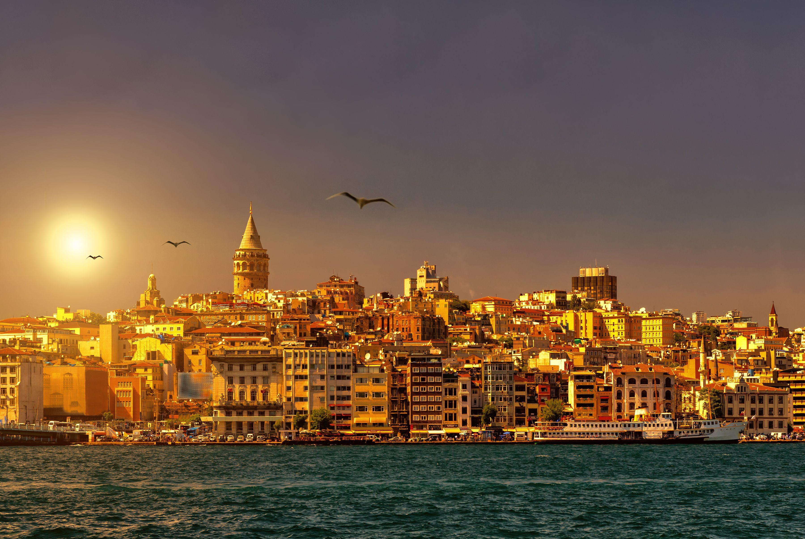

Istanbul, once known as Byzantium and later Constantinople, is a city with a profound historical legacy that dates back over 2,500 years. As a former capital of the Roman, Byzantine, and Ottoman Empires, Istanbul is a treasure trove of ancient sites and monuments that reflect its diverse past.
The architecture of Istanbul is a striking blend of various styles from different eras. From the awe-inspiring Hagia Sophia and the intricate Blue Mosque to modern skyscrapers, the city's skyline is a testimony to its ability to blend the old with the new seamlessly.
With landmarks like the Topkapi Palace, Grand Bazaar, and the scenic Bosphorus Strait, Istanbul offers a wealth of attractions that cater to history buffs, shopaholics, and nature lovers alike, making it a vibrant and diverse destination.
Istanbul's cultural scene is rich and dynamic, blending traditional Turkish customs with modern influences. The city is renowned for its music, dance, festivals, and culinary delights that celebrate its unique heritage and multicultural essence.